Use Case
24x7 has been obsession and customers expect the online services whether it’s an ecommerce website or one for watching videos on Netflix on Hotstar. Customers expect the service to be up and running all the time and any downtimes makes the customer to switch to some other service which is a loss of revenue to the company.
So, companies take a lot of measures to have the infrastructure across multiple points of failures like setting them up in different geographical locations, having multiple backups, setting up health checks. With all this comes complex routing policies. Manually creating multiple records with different routing policies and dependencies among them is prone to errors and time consuming also. This is where “Traffic Flow” a feature of Route53 comes into play. Not only everything can be automated, but we can use the same can be used across multiple domains like praveen.com, praveen.in with minimal changes.
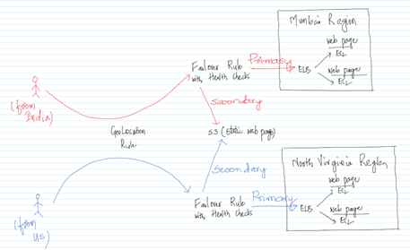
In this use case we will be using the Route53 features, so that Indian Customers using the site are redirected to the resources in Mumbai Region and the US Customers are redirected to the resources in North Virginia Region. This provides better latency and also high customer satisfaction. Also, hardware/software may go bad (in the Cloud also), so instead of giving up, we would be redirecting the users to S3 in case of failover to display a static with minimum functionality or with the information mentioning that the site is down and it would up after some time. The entire thing would be automated using the Route53 “Traffic Flow” feature.
We are either in India or in US at a particular instant of time, so we how do we make sure that customers are redirected either to the Mumbai Region or the North Virginia resources depending on where they are located? We can create a Windows EC2 in the appropriate Region and start browsing from that instance to make sure we are displayed the appropriate webpage as per the Internalization (I18N).
To make the application even more fault tolerant, we can have an ELB and back it up with multiple EC2 instances, so as to make sure that EC2 is not a single point of failure.
AWS Services: Route53, ELB, EC2 and S3.
-- Go to https://www.freenom.com/ and check the availability for a domain.
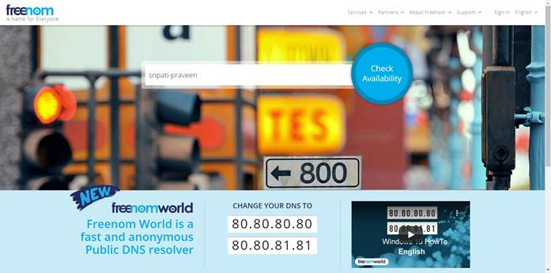
-- Freenom will show the available domains. Select on “Get it now!” for one you like.
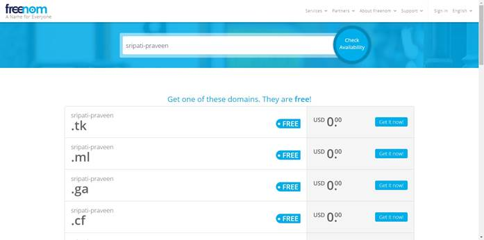
-- Click on Checkout.
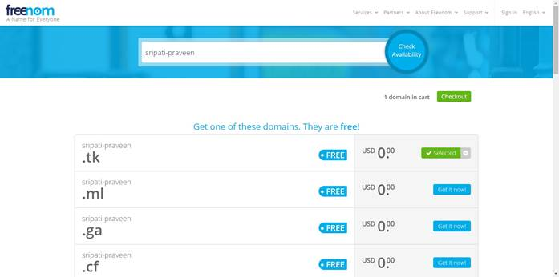
-- Change the Period to “12 Months @ FREE” and click on Checkout.
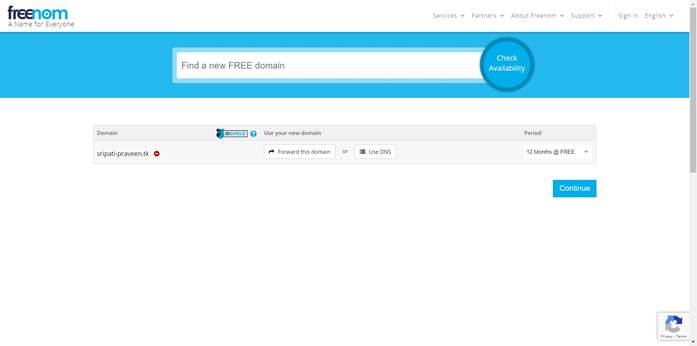
-- If you have an account with Freenom click on “Already Registered? Click here to login” or else enter an email address and click on “Verify My Email Address”. I clicked on “Already Registered? Click here to login”, since I already have an account with Freenom.
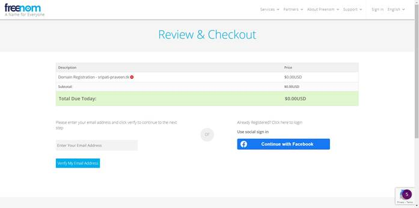
-- Enter the email and password and click on Login.
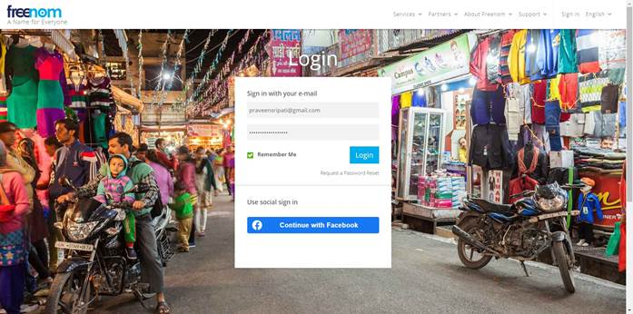
-- Click on the name in the top right and go to “View cart”.
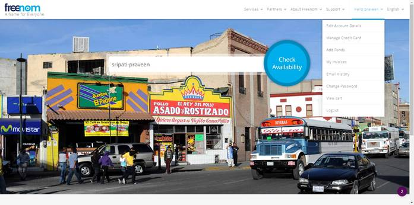
-- Accept “I have read and agree to the Terms & Conditions” and click on “Complete Order”.
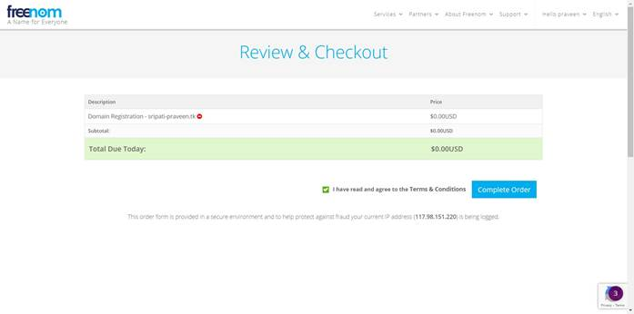
-- Go to Services in the top menu and click on “My Domains”. Here you will notice the domains which have been registered with Freenom. I have already registered praveen-sripati.tk domain with Freenom and would be using it for this particular use case.
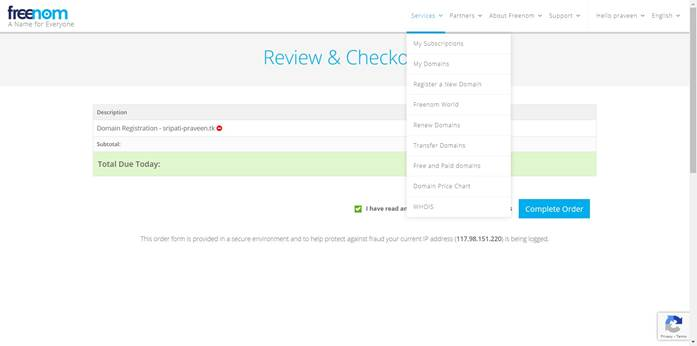
-- Go to the EC2 Management Console, make sure to select the North Virginia Region and create two EC2 instances with the below details. Name them as NV-WS1 and NV-WS2.
- Ubuntu 18.04
- Security Group (allow inbound 22/SSH and 80/HTTP for everyone)
- Attach a Keypair for authentication
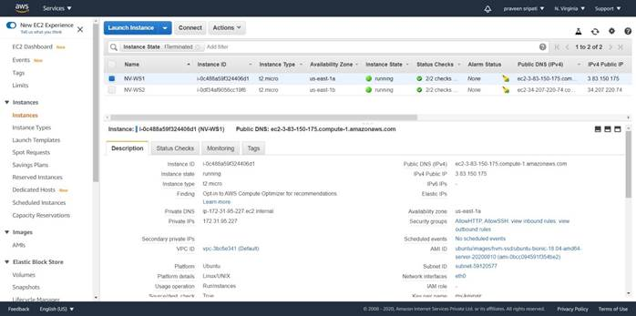
-- Likewise switch to the Mumbai Region and create two more EC2 instances and
name them as Mumbai-WS1 and Mumbai-WS2. The naming is important to avoid
confusion as we have multiple EC2 instances.
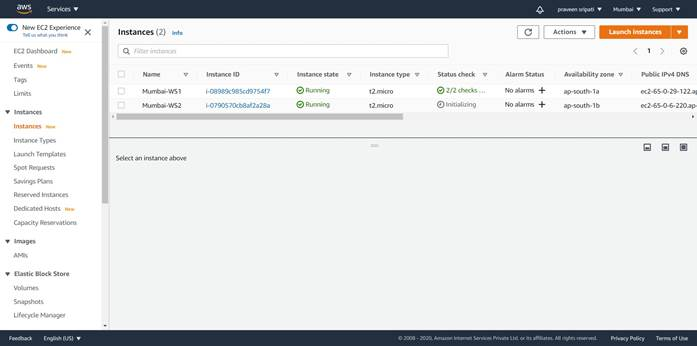
-- Connect to the EC2 instances and execute the below commands to install apache2 and create a static webpage.
#become a root
sudo su
#get the list of softwares
apt-get update
#install the apache2 webserver
apt-get install apache2
# start apache2
service apache2 start
#move to the default html folder
cd /var/www/html
#delete the existing index.html
rm index.html
#create a new index.html
echo "Hello World!" >
index.html
-- In the above commands replace “Hello World!” with the below text appropriately to reflect the location of the server.
- I am NV-WS1
- I am NV-WS2
- I am Mumbai-WS1
- I am Mumbai WS2
It’s required to have different content in
the index.html, so that when we try to access the webpages later on, we know
exactly which EC2 instance we are hitting or which EC2 instance is serving the
request. Before proceeding to the next step, make sure that the webpages are
accessible via the browser by using the Public IP of the EC2 instances.
-- Create Target Groups in both the regions and associate the EC2 instances in the corresponding regions.
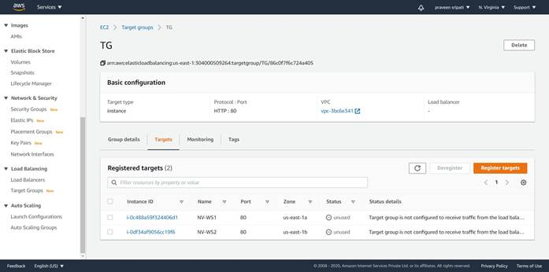
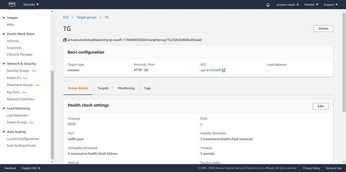
-- Create an Application Load Balancer in both the regions and make sure to associate the above created Target Groups. Note down the “DNS name” of both the Application Load Balancers. Also, make sure all the web pages on the EC2 instances are accessible via the DNS name of the Application Load Balancer in the browser.

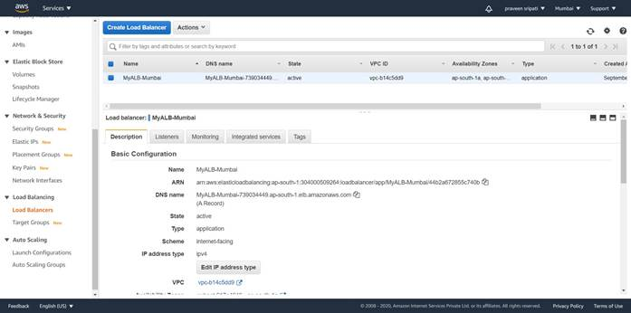
-- Now we will create a statice website in S3. This will act as backup, just in case the Application Load Balancer or the EC2 instances are down for some reason.
-- Create an S3 bucket with the same name as the domain registered with Freenom. The Region where the bucket is created doesn’t matter. Create a file index.html with the below content and upload to the S3 bucket.
<html>
<body>
S3 Backup Site
</body>
</html>
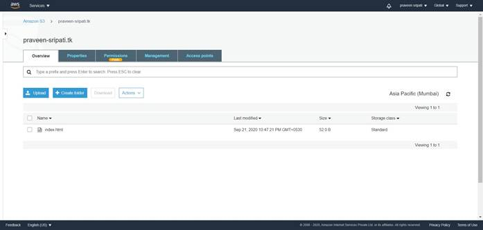
-- Go to the Permissions tab, make sure “Block public access” is selected and
turn of “Off” the “Block all public access” as shown below by click on the Edit
button.
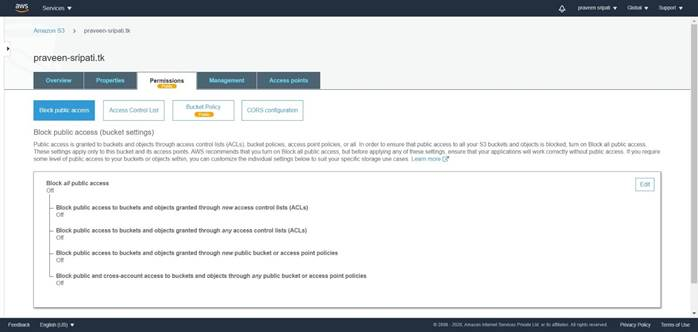
-- Click on the Bucket Policy and use the below JSON to give the public read-only permissions to the bucket and the contents within it. Make sure to change the bucket name, before using the JSON. Click on Apply for the permissions to take effect.
{
"Version": "2012-10-17",
"Statement": [
{
"Sid": "PublicReadGetObject",
"Effect": "Allow",
"Principal": "*",
"Action": [
"s3:GetObject"
],
"Resource": [
"arn:aws:s3:::praveen-sripati.tk/*"
]
}
]
}
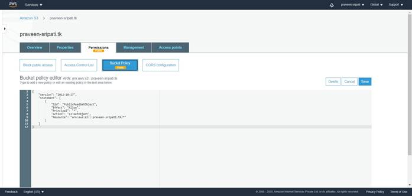
-- Go to the Properties tab and enable the “Static website hosting” and specify the index.html as the Index document. Note down the Endpoint and click on Save. Make sure that the index.html is accessible via the browser using the Endpoint.
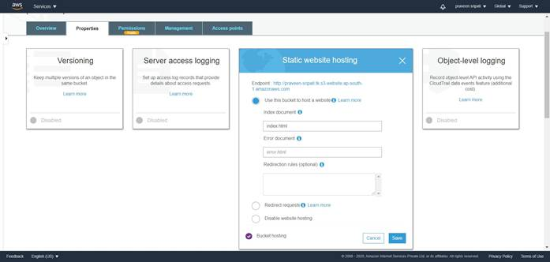
-- Go to the Route53 Management Console and the “Health checks” tab. Click on “Create health check”.
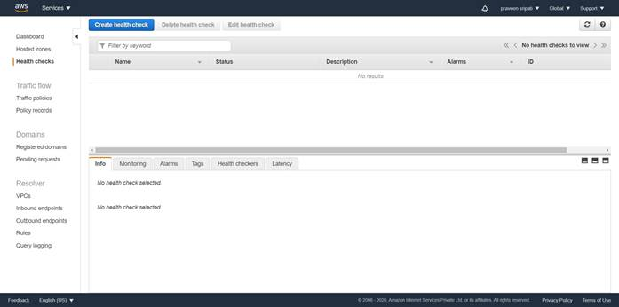
-- Enter the name as “NV-EC2-WebSite”, for the “Specify endpoint by” select
“Domain name” and enter the DNS name of the NV Application Load Balancer. Click
on Next.
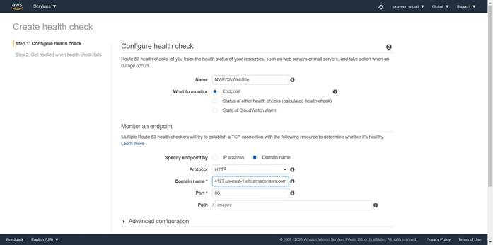
-- Click on “Create health check”.
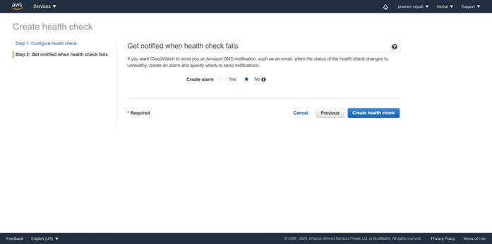
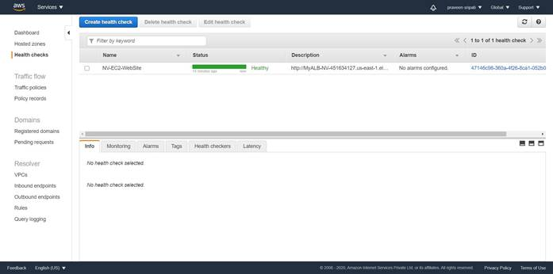
-- Likewise create another Health check for called “Mumbai-EC2-Website” using the DNS name of the Mumbai Application Load Balancer. Both of them would be healthy as both the Application Load Balancers are working fine. Note down the ID of the both the health checks.
-- Go to the Hosted zones and click on “Create hosted zone”.
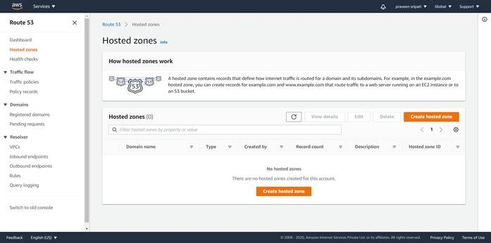
-- For the Domain name, enter the same name which was created in Freenom. Click on “Create hosted zone”.
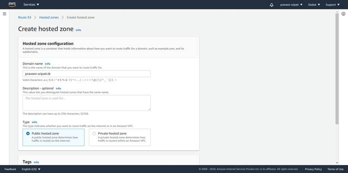
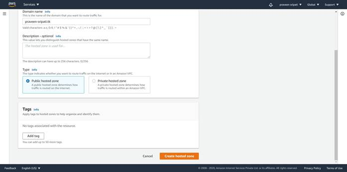
-- The Hosted zone would be created as shown below with two records. One of record is of type NS (for Name Servers). Note down the four name servers (ns-97.awsdns-12.com etc).
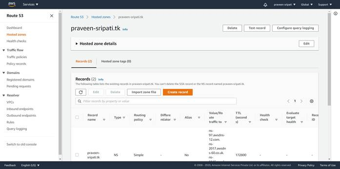
-- Go back to Freenom and click on “Manage Domain”.
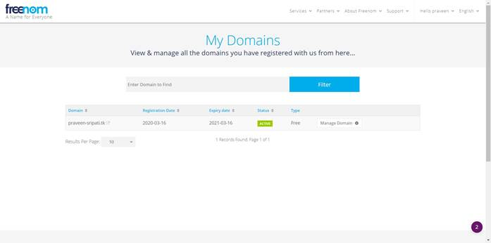
-- Under the “Management Tools” select Nameservers.
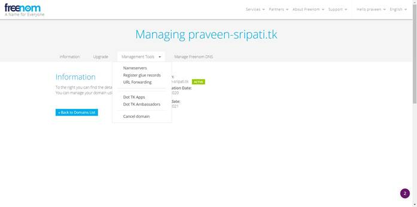
-- Select “Use custom nameservers (enter below), enter the Nameservers got from the Route53 Management Console and click on “Change Nameservers”.
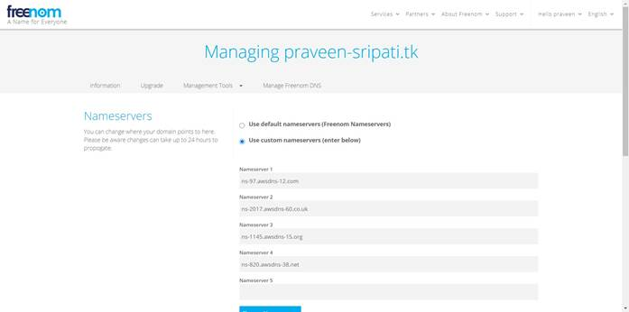
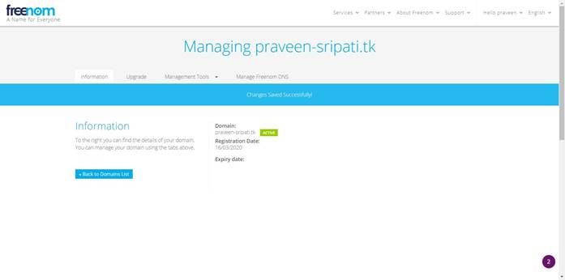
-- In the Route53 Management Console navigate to “Traffic policies” and click on “Create traffic policy”
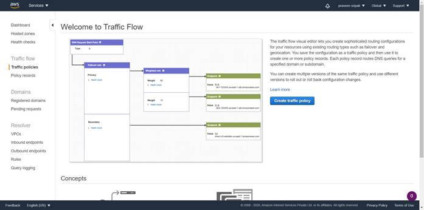
-- Give the Policy a name and click on Next.
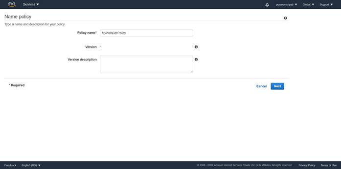
-- Click on “Import traffic policy”.
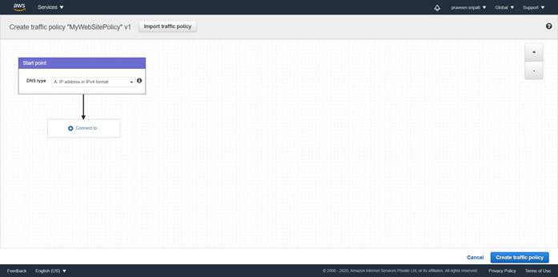
-- Copy the below JSON and click on “Import traffic policy”. Also, make sure to make changes to the highlighted sections.
- Application Load Balancer DNS Name
- S3 Bucket name
- Health Check ID (the first is for Mumbai and second for North
Virginia)
{
"AWSPolicyFormatVersion": "2015-10-01",
"RecordType": "A",
"Endpoints": {
"endpoint-failover-SoCt": {
"Type": "application-load-balancer",
"Value": "MyALB-Mumbai-739034449.ap-south-1.elb.amazonaws.com"
},
"endpoint-failover-jQOZ": {
"Type": "s3-website",
"Value": "praveen-sripati.tk.s3-website.ap-south-1.amazonaws.com",
"Region": "ap-south-1"
},
"endpoint-failover-taLF": {
"Type": "application-load-balancer",
"Value": "MyALB-NV-451634127.us-east-1.elb.amazonaws.com"
}
},
"Rules": {
"geo-start-XzOn": {
"RuleType": "geo",
"Locations": [
{
"RuleReference": "failover-geo-leDT",
"IsDefault": false,
"Country": "IN",
"EvaluateTargetHealth": true
},
{
"IsDefault": false,
"Country": "US",
"EvaluateTargetHealth": true,
"RuleReference": "failover-geo-IqWN"
}
]
},
"failover-geo-leDT": {
"RuleType": "failover",
"Primary": {
"EndpointReference":
"endpoint-failover-SoCt",
"EvaluateTargetHealth": true,
"HealthCheck": "9b3a04e5-c492-470d-bddf-af9f5cd5ff86"
},
"Secondary": {
"EvaluateTargetHealth": true,
"EndpointReference": "endpoint-failover-jQOZ"
}
},
"failover-geo-IqWN": {
"RuleType": "failover",
"Primary": {
"EvaluateTargetHealth": true,
"HealthCheck": "47146c98-360a-4f26-8ca1-052b02e55ab6",
"EndpointReference":
"endpoint-failover-taLF"
},
"Secondary": {
"EvaluateTargetHealth": true,
"EndpointReference":
"endpoint-failover-jQOZ"
}
}
},
"StartRule": "geo-start-XzOn"
}
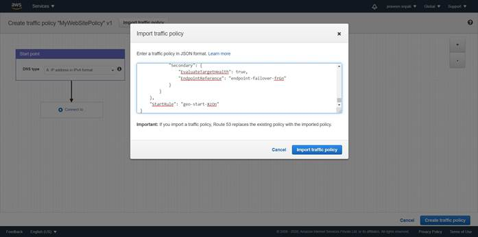
-- The Traffic Policy should appear as shown below. Zoom out and feel free to navigate the flow. Click on “Create traffic policy”.
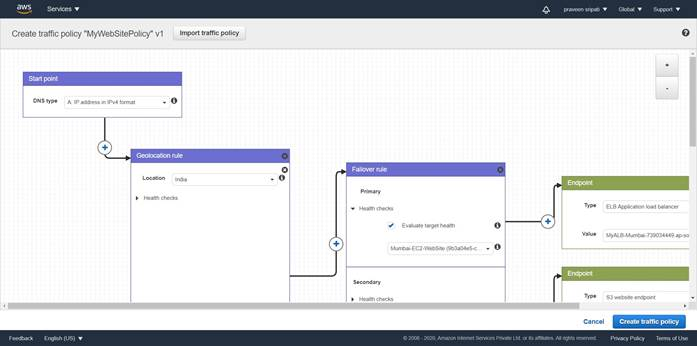
-- Click on “Create policy records”.
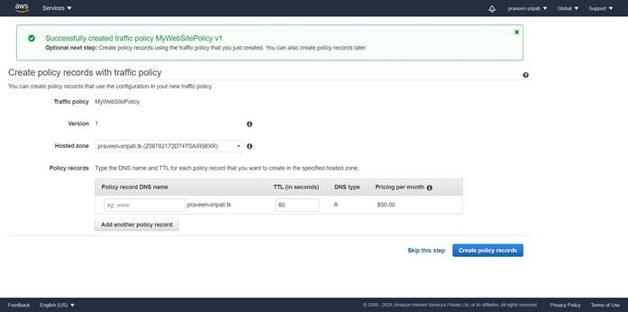
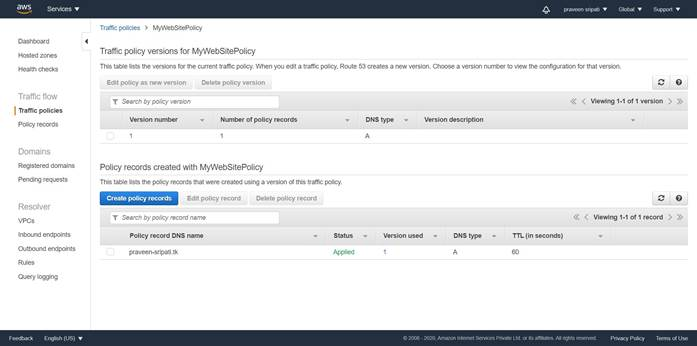
-- In the Hosted Zone a new Record for “Traffic policy record” would be created. There is no need to make any changes here.
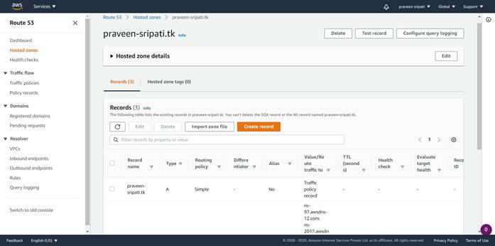
-- Open up a browser and navigate to the domain name. Since, I am based out of India, it should be redirected to Application Load Balancer in Mumbai by the “Geolocation rule” and then finally to the Mumbai EC2. Refresh the screen and it should load balance between the two webpages in Mumbai EC2 instances. The browser should display “I am Mumbai-WS1” or “I am Mumbai-WS2”.
Note that it takes a few minutes to hours for the DNS name propagation, so this task might not work immediately. Try after some time and also with different internet connections.
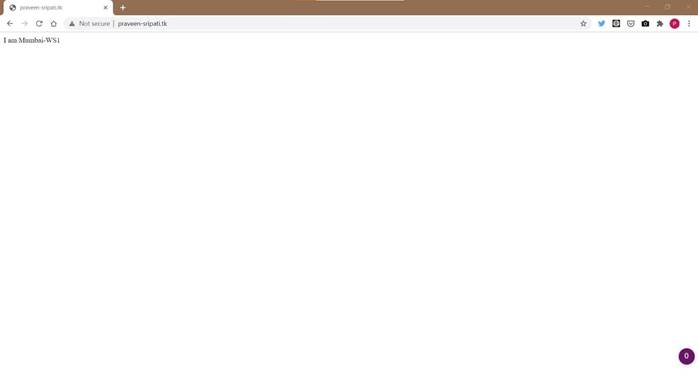
-- Go to the EC2 Management Console and make sure North Virginia is selected as Region. Create an Windows EC2 instance, of t2.micro.
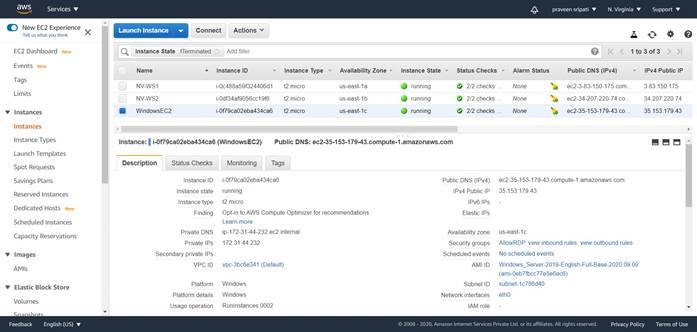
-- Connect to the Windows EC2 instance via RDP, open a browser navigate to the domain
name. The EC2 instance has been created in North Virginia, so the message “I am
NV-WS1” or “I am NV-WS2”should be displayed in the browser. Now, we are sure
the user is redirected to the web page based on the location.
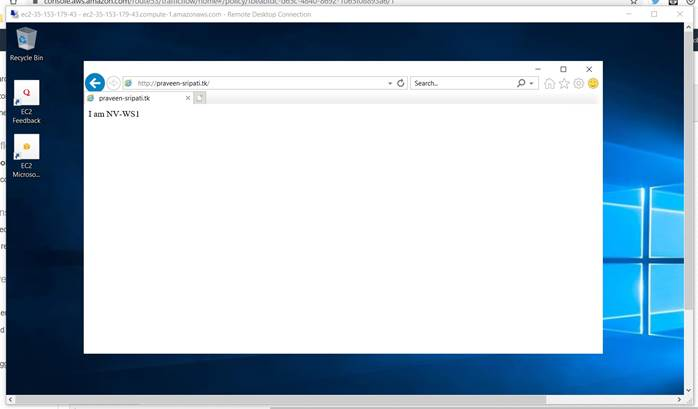
-- Go the EC2 Management Console, make sure to select Mumbai as the Region. Stop both the EC2 instances.
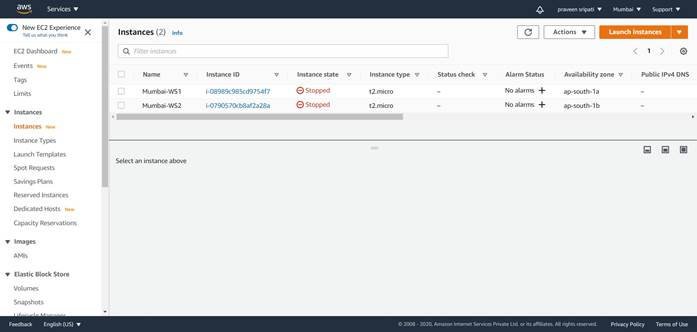
-- The EC2 instances are down, the web pages are not accessible. So, the health
check for Mumnai-EC2-WebSite should become Unhealthy.
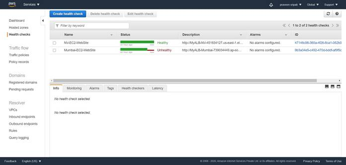
-- Navigate via the browser to the domain name and we should be redirected to the static website in S3, since the Application Load Balancer is down and that the health checks are in Unhealthy state. This routing happens by a combination of “Traffic policies” and “Policy records” in the Route53.
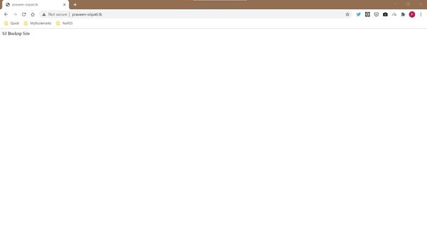
-- Start back the EC2 instances in Mumbai.
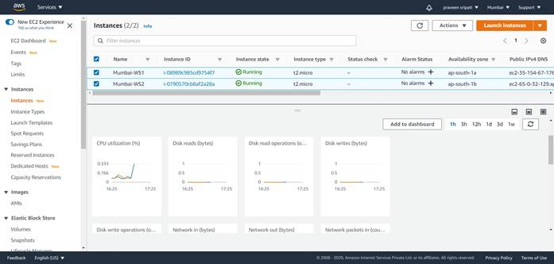
-- The health check for “Mumbai-EC2-WebSite” should turn to healthy in a few minutes.
-- Navigating to the domain in the browser
should display “I am Mumbai-WS1” or “I am Mumbai-WS2”.
Conclusion
AWS has infrastructure (Regions/Availability Zones/Edge Locations/Local Zones) spread across the world and this can be leveraged by having redundancy to make our application spread across different Regions. Also, by having the application close to the user, we would be able to provide better latency to the end user.
All of these requires complex routing policies, which can be difficult to manage over time as the application becomes complex. This is where, “Traffic policies” and “Policy records” feature of the AWS Route53 come into play. By storing the Traffic policies in JSON format, it’s possible to reproduce the same in different environments like dev/test/pre-prod/prod.